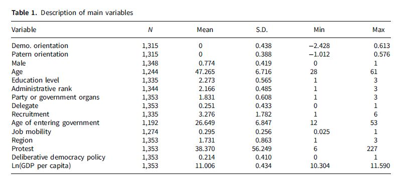
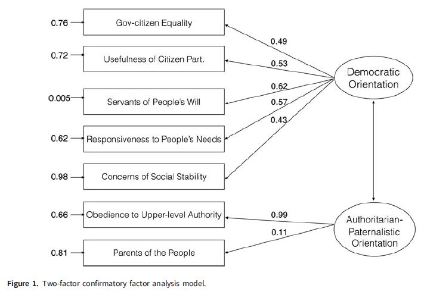
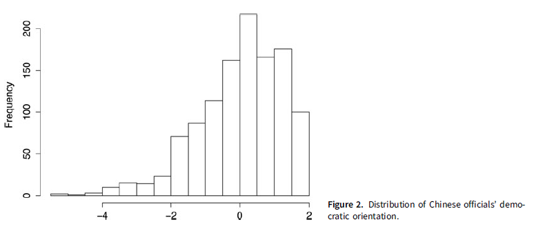
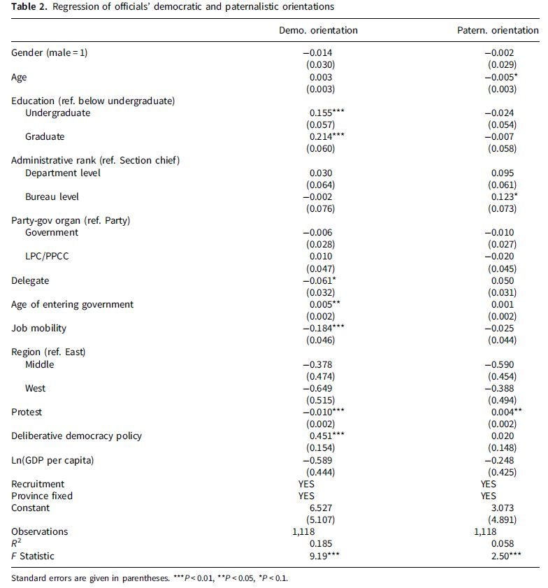
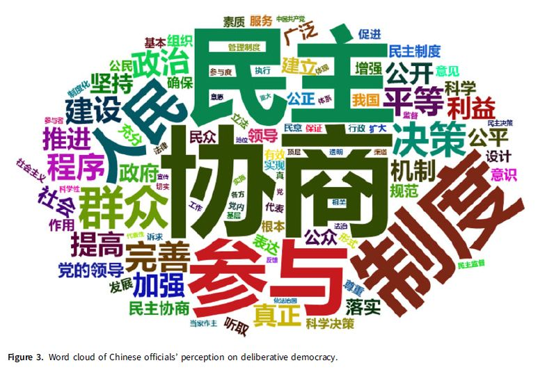
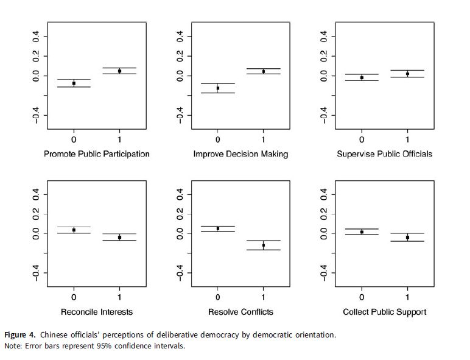
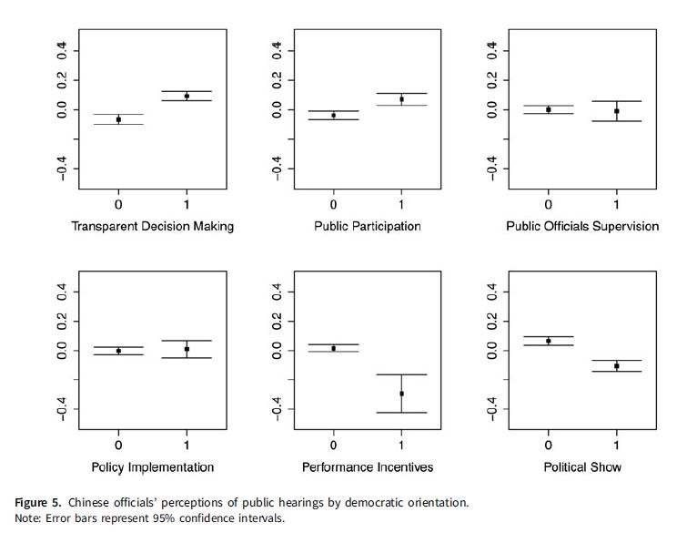
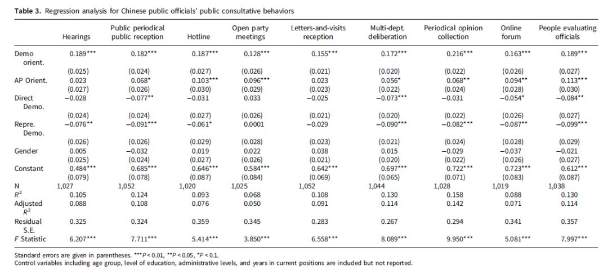

收录于合集 #比较政治学 121个
文献来源： Kaiping Zhang and Tianguang Meng, “Political elites in deliberative democracy: beliefs and behaviors of Chinese officials,” Japanese Journal of Political Science (2018),19,643-662.
作者简介： 张开平，清华大学政治学系助理教授，研究领域为政治心理学和政治传播学；
孟天广，清华大学政治学系副教授，研究领域为中国政治制度、网络与信息政治学以及计算社会科学。
上图从左至右依次为本文作者张开平和孟天广
政治精英在形塑国家发展方面发挥着格外重要的作用，因此，从保加利亚到中国台湾地区再到巴西，这些地方在第三波民主转型浪潮中，所受政治精英的影响概莫能外。无独有偶，政治精英也是推动中国社会主义民主建设的重要力量。本文通过对全国官员的调查，发现中国地方官员的民主信念受到本土政治文化（儒家价值观和中国共产党的根本信条）、个体特性以及社会和制度等方面因素的影响，他们中的一部分视协商民主为推动社会主义民主发展的基础，另外一部分则从工具主义的角度看待协商民主。
在过去的几十年中，世界范围内的参与式民主和协商民主的实践逐渐蔚然成风，越来越多的普通人能参与到政策协商和制定的过程中来。尽管如此，是否允许民众参与到这一过程并回应民众关切的需求依然取决于政府和政治精英。特别是在威权政体中，政治发展通常都是通过自上而下的顶层设计来推动的，精英的影响具有决定性地位。近年来，中国加快推进社会主义民主建设，在党、政府、立法机关、民众、民主党派以及官方组织和非政府组织之间开展协商民主的实践，对给政府官员产生了重要影响。但是在何种程度上，这些官员的心理和行为会在协商民主的实践下产生影响？围绕于此，作者试图通过在全国12个省级行政区的官员抽样调查数据予以探寻。
持允而论，学术界对待民主是否是普世价值的争论时至今日仍未休止。亨廷顿曾指出，不同文明和文化中的民主观大相径庭，李光耀也强调西方民主并不适用于亚洲社会。同样，第四波的亚洲民主动态调查（Asian Barometer Survey）的调查结果支持这一结论。特别是对中国而言，相比于其他亚洲国家和地区，只有一小部分的中国民众将民主理解为政治自由，只有1/4的民众视民主为竞争性选举，而绝大部分的民众仍然视民主为善治和社会公正。在儒家文化的影响下，中国共产党创制并发展了包括群众路线在内的一系列社会主义民主原则。其中，群众路线包括了执政党的群众观——“一切为了群众，一切依靠群众”，官员代表人民来行使权力，以及群众工作方法——“从群众中来,到群众中去”，要求官员在执行政策时必须倾听民意。很明显，群众路线的原则正是来源于儒家文化中的民本主义，并且民本主义对中国官员的民主观产生了深远影响。
为了探究中国官员对协商民主的理解，本文做出以下四条假设：
H1:中国政治精英根据儒家传统和群众路线来理解民主。
H2:中国政治精英的民主观因人而异。
H3:中国政治精英对社会主义协商民主的理解与他们潜在的民主观一致。
H4:中国政治精英对社会主义协商民主的实践取决于他们对民主的理解。
本文使用的数据来自于中央编译局、清华大学和中山大学主持的“发展社会主义协商民主”研究课题，该调查根据地理和行政级别运用配额抽样的方法，在2015年3月到6月间，抽取了代表六个主要地理人口地区的12个省级行政区的2223名副县（处）级和以上级别的官员，这些官员分别来自政府、政党、立法机关和国企等部门。其中1/4的官员为副县（处）级，有近1/2的官员为正县（处）级，还有1/5的官员为副厅（局）级，关于他们个人情况的描述性统计如表1所示。

问卷对官员民主观的理解通过多项选择的问题进行测量，这些选项答案分别包括直接民主、选举民主和群众路线等，结果显示有32.4%的官员认为“民主是公务员愿意倾听民意并根据民意来决策”，这一观念符合民本主义和群众路线的设想。有趣的是，有33.7%的官员认为民主就是直接民主也即“所有重大决策必须经过人民讨论并得到多数人的同意”，只有19.1%的官员认为民主就是包括选举在内的代议制民主。为了进一步区分官员群体中潜在民主观念的不同结构，作者将问卷问题提取为家长式和群众路线两个维度，并在此基础上先后使用主成分分析和验证性因子分析的方法提取出民主导向和威权- 家长导向的两种民主理解观，结果如图1所示。

图2是持民主导向观念官员的分布情况，它显示出中国官员如何理解他们自身与人民群众间的关系。尽管很多官员都认为他们是为人民服务的，但也有相当一部分官员认为政府就是统治人民的，并且他们对公共参与表示出怀疑。这种认知的分野就为接下来检验假设2创造了前提条件。

接下来，作者准备了三组解释变量，第一组是包括性别、年龄、学历等个人信息在内的人口学变量，第二组变量则是官员的政治身份，包括级别、职务种类、代表角色、工作年限以及职位流动性等变量。第三组变量描述了包括地方不同层级的抗议和协商民主政策在内的社会和制度的影响，而地区层级的人均GDP和省级行政区的固定效应则被设定为控制变量。作者运用OLS方法对影响官员民主信念的变量进行回归分析，从表2可见：首先，个人层面的人口学特征能影响个人的政治倾向，但效果有限。其次，官员的政治地位和工作年限对他们的政治倾向产生了显著的影响。在这，地区层级的社会和制度影响也发挥了显著的作用。

然后作者先后通过两道题目考察了官员对协商民主的理解，第一道题目询问了被访官员“协商民主对什么最有效？”。在对这一问题回答的答案中，有24.1%的官员认为协商民主对提高决策最有效，有18.9%的官员认为协商民主对促进公众参与最有效，还有16.5%的官员认为协商民主是调和利益的手段。此外，还有14.2%、10.3%和9.8%的官员分别认为协商民主对监督官员、赢得群众支持和化解冲突最有效。作者指出，受访官员对上述问题的回答可分为两种价值取向，第一类是以民主决策、公共参与和监督权力为主的民主治理取向，第二类则是包括安抚冲突、调和利益以及赢得民众支持在内的实用主义取向。承接于此，第二道题进一步询问了受访官员“在你看来，在中国推进协商民主制度建设最关键的因素是什么？”对待这种开放式问题，一些官员回答是“民主”、“参与”或者“决策”等，而另外一些官员则回答的是“群众”、“党的领导”以及“利益”等。作者对上述答案做了文本分析，生成的词云如图3所示。

进一步，作者检验官员群体中潜在的不同民主观是理解协商民主差异的重要原因，T检验显示持民主治理取向的官员民主观得分均比持实用主义取向的官员得分高。图4展示了持民主治理导向的官员（上三组）和实用主义导向的官员（下三组）的对比。认同协商民主在提高决策水平、促进公众参与及社会监督上的积极意义的官员民主观得分均高于其他官员；而强调协商民主调解矛盾、化解矛盾冲突，获取公众支持的功利主义用途的官员的民主观得分显著低于其他人。
图5中则显示了在另一道题目上以听证会作为协商民主的具体形式重复了以上分析，并得到了一致的结果。即认为协商民主是为了维护社会稳定和争取民众支持的实用主义导向的官员更可能视公共协商为晋升的工具或者“花瓶”。由此，假设3“中国官员因为其潜在的民主取向而在对待协商民主的实践上态度不同”得以成立。官员对发展社会主义协商民主的认知和态度取决于其内在的民主价值取向。民主价值取向较强的官员重视协商民主对决策科学性和民主监督的积极意义，而民主价值较薄弱的官员则将协商民主看作是一种达到功利主义目的的手段，更倾向于认为它只是程序上的，对决策并不产生本质影响。
 
最后，作者通过建构回归模型DP = β0 + β1DemoOrient + β2AP Orient + β3X + ε来检视假设4。在回归方程中，因变量DP表示协商实践，DemoOrient表示通过5个指标测度的民主价值观，APOrient则表示通过2个指标测量的威权- 家长导向的价值观，X为包括控制人口学变量和政治身份的控制变量。与此同时，作者还将个人对民主理解的三种形式——协商民主、代议制民主和直接民主设为控制变量。表3是运用OLS方法做的回归分析，结果表明官员群体中民主取向的观念对推动协商民主的九项实践均起到了显著正向作用，这表明持民主倾向的官员更愿意积极地通过这些途径来与民众互动。有意思的是，威权- 家长主义取向也对协商民主中的一些形式产生了积极影响，但是这种效应并不是特别稳固。表面上来看这种价值取向的官员仍然愿意通过公众接待、热线电话以及定期舆情搜集等形式来倾听民意，但这样做很可能是出于他们本身作为“父母官”的认知倾向要求他们去倾听民意或者只是简单地遵从上级指令。此外，与认为民主就是协商民主的官员相比，认为民主是代议制民主的官员更少愿意与民众进行互动，这可能是因为他们认为选贤举能产生的官员应该代表人民去决策。他们的个人特征也没有对他们的选择产生显著的影响。

最后作者总结道，本文通过调查数据，讨论了个人、社会以及制度层面的因素连同文化和政治传统对精英如何理解民主特别是社会主义协商民主，推进了对政治精英如何在发展协商民主中作用的研究。当然，研究也表明，威权政体下的协商可能导致民主前景的分殊，比如在何种程度上，政治精英会将其作为推进民主治理的途径或者只是将其视为巩固现状的手段？有鉴于此，未来学界需要扩展对各种情境下政治精英推进或者阻碍民主治理的研究。
感谢张开平教授拨冗审定！
编译：杨端程
编辑：吴温泉


政文观止
微信扫一扫赞赏作者 __赞赏
已喜欢，对作者说句悄悄话
取消 __
发送给作者
发送
最多40字，当前共字
上一页 1/3 下一页
长按二维码向我转账
受苹果公司新规定影响，微信 iOS 版的赞赏功能被关闭，可通过二维码转账支持公众号。